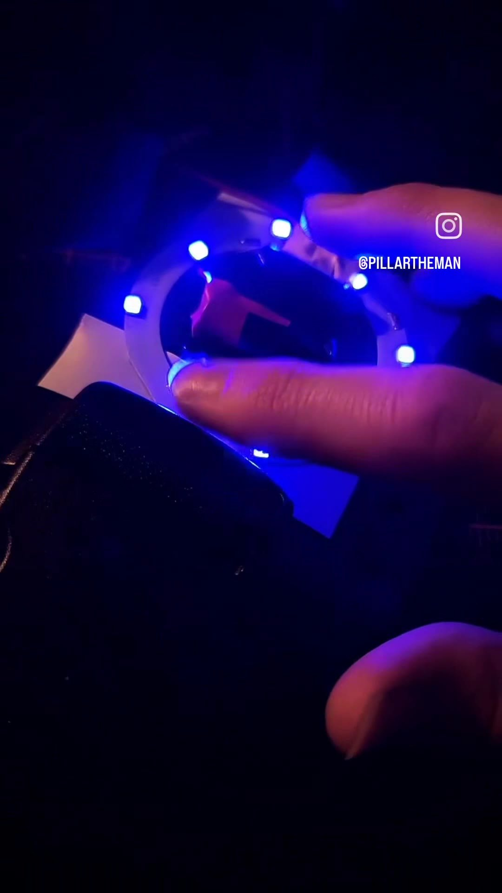
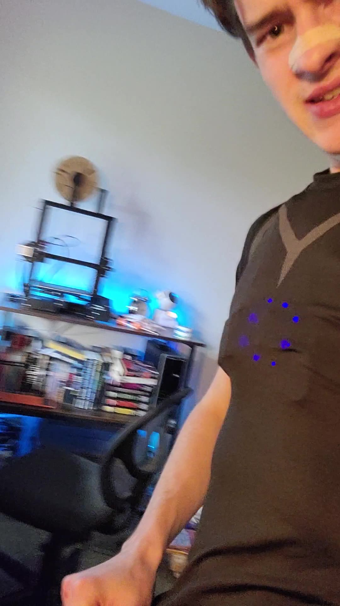
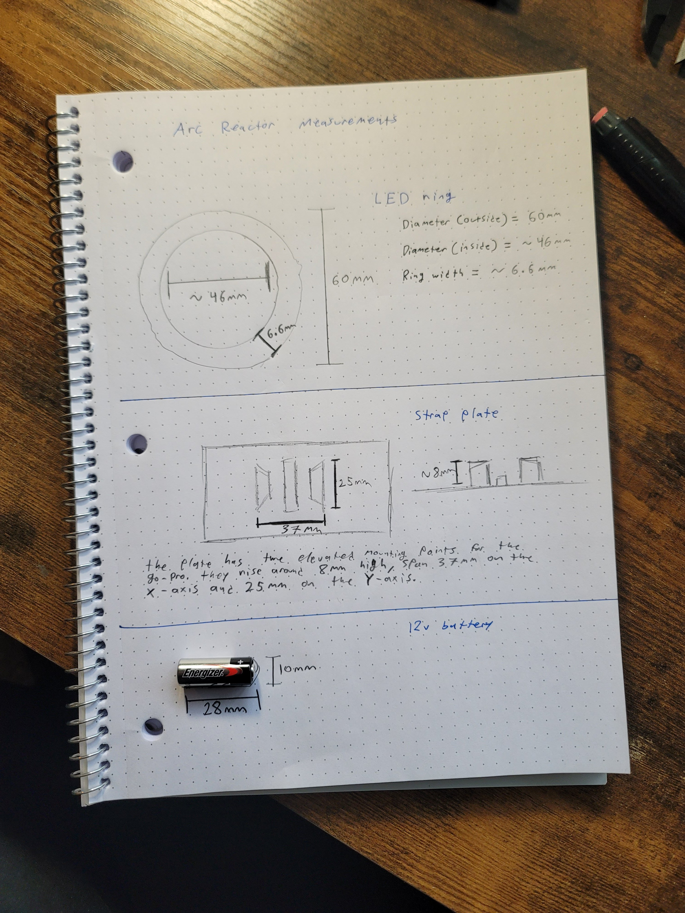
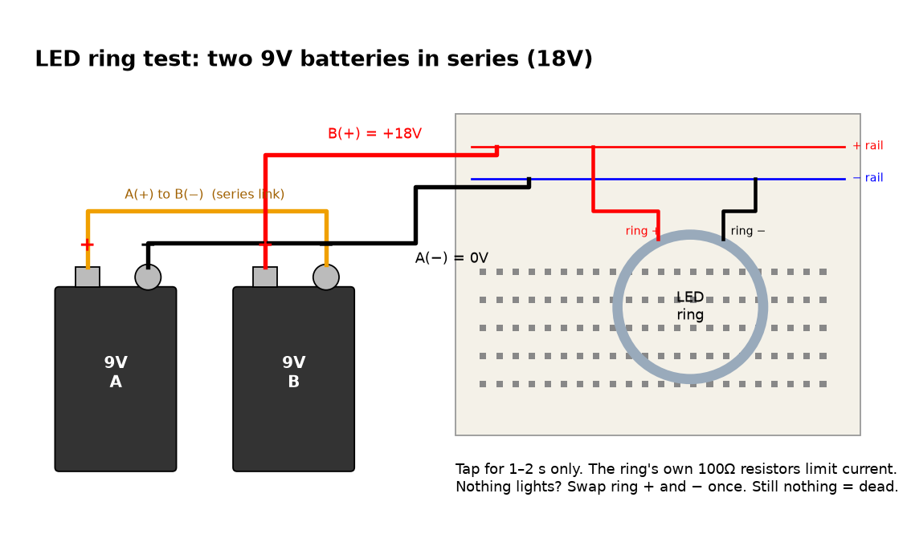

Arc Reactor
An Iron Man-style chest light from two salvaged wheel LED rings, worn under a shirt on a chest strap.
Tape-up prototype tested 22 Nov 2026, then parked to focus on CyberBoard

Problem
I pulled two LED rings out of the hoverboard wheels and want a small arc reactor I can wear on my chest under a shirt.
Constraints
- Quick build: a 3D-printed housing, an on/off button, and a diffuser
- Mounts on a chest strap. The bracket is off the plate. The plate's prongs are ~8 mm tall
- Low profile under a shirt, but the housing has to clear or cover the buckle
- The resistors ran warm at 18 V, so the housing needs vents or a standoff from the chest
- Ender-3, about 220 × 220 mm, PLA
Key result
A tape-up with no printed parts lights, and it looks good worn. The buckle sticks out farther than the light, and the ring reads semi-square with dotty LEDs. Parked 22 Nov 2026. CAD has not started.
Measured parameters
| Parameter | Value | Basis |
|---|---|---|
| Ring OD | 60 mm | Measured |
| Ring ID | ~46 mm | Measured |
| Band | ~6.6 mm | Measured |
| Ring thickness with LEDs | Pending | Not measured |
| Supply | 12 V batteries. The one on hand is an A23, 28 × 10 mm | Size measured. Runtime not tested |
| A23 capacity | ~50 mAh class, so runtime will be short | Estimated. Confirm by test |
| Strap prongs | ~8 mm tall, ~37 × 25 mm footprint | Measured |
| Strap plate overall | Pending | Not measured |
| LEDs per ring | 9 | Counted |
| Series resistors | 3 × 100 ohm | Marking read (101) |
Results
| Check | Result |
|---|---|
| One 9 V battery | No light, both rings |
| 18 V, brief tap | Both rings light |
| 12 V batteries | Work perfectly |
| Tape-up prototype | Lights, and looks good worn. Battery and ring taped to the strap plate. No printed parts |
| Worn shape | The ring reads semi-square, and the LEDs show as dots |
| Buckle | Sticks out farther than the light |
Failure and fix
A single 9 V battery left both rings dark, and diode mode on my meter read OL both ways. They had already worked on the hoverboard, so I worried the soldering heat from pulling them off had killed them. That meter can false-fail these LEDs, and 9 V is at or below the string voltage. A 9 V battery also sags under load. Two 9 V batteries in series, tapped for 1–2 seconds at 18 V, lit both rings. I do not leave them on 18 V: the 100 ohm resistors run warm. They now run on 12 V batteries.
The tape-up found the next problems. The chest-strap buckle sticks out farther than the light. Worn, the ring reads semi-square, and the nine LEDs show as separate dots. The housing has to hold the ring in a true circle, add a diffuser, and stand proud of the buckle or cover it. None of that is built.
Decisions
| Decision | Choice | Tradeoff |
|---|---|---|
| Chest mount | Flat, slightly textured glue pad. The strap's back plate is hot-glued to it | The bracket is already off, so a printed 2-prong has nothing to mate with. The joint is not meant to come apart often |
| Supply | 12 V batteries. An A23 (28 × 10 mm) fits between two risers on the strap plate | 9 V is too low. 18 V is a bulky bench workaround, and the resistors run warm. Capacity is small, so runtime is still unproven |
| Diffuser | Required on the front of the housing | The worn prototype shows the LEDs as dots. Material is still open: a translucent printed layer, or frosted acrylic |
| Housing | Not designed yet. It must hold a true circle, diffuse the LEDs, and clear or cover the buckle | The tape-up looks good and is not the shape I will print. CAD has not started |
Visuals




Next steps
Parked 22 Nov 2026 so CyberBoard comes first. CAD has not started.
- Still to measure: ring thickness with the LEDs, and the strap plate's overall length, width, and thickness
- Choose one ring or both, the button, and the diffuser material
- Housing: hold the ring in a true circle, add a diffuser, and clear or cover the buckle
- Confirm how long an A23 actually runs